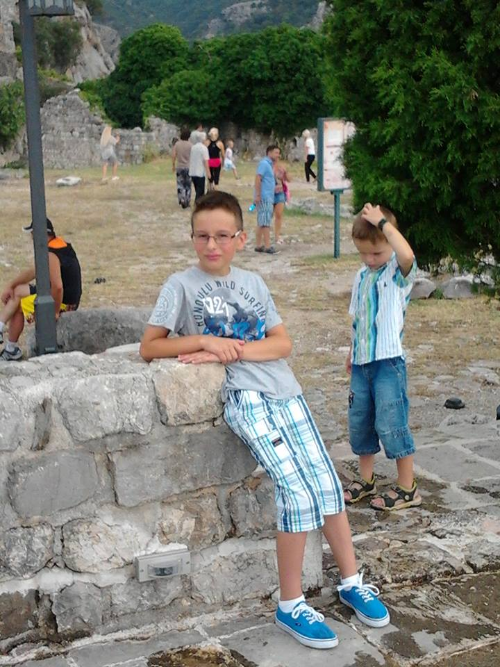

Mijn naam is Samed, ik ben 15 jaar en ik woon in Woudrichem. Mijn doelen zijn dat ik deze opleiding in 1 keer kan halen en dat ik nooit de verkeerde beslissingen neem in het leven(bijv. drugs, roken en drank).
Ik ben slechthorend geboren, dus heb ik gehoorapparaatjes. Ik word op sommige momenten best wel snel agressief, maar ik ben verlegen dus op school is het voor mij moeilijker om mezelf te uiten voor onbekende personen.
Ik heb niet hele goede werkervaring in het vak, omdat ik nog nooit in een winkel heb gewerkt. Ik heb nog nooit in een winkel gewerkt, omdat ik nog niet wist wat ik leuk vond om te doen.
Dit was ik toen ik klein was. Ik was toen op vakantie aan zee in Montenegro en ging ik dus een hele oude stad bezoeken.
Als je meer over mij wilt weten kan je nog altijd chatten met mij op Facebook. Klik dan de link hier